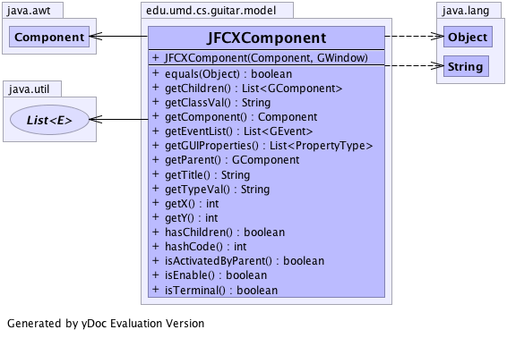

edu.umd.cs.guitar.model
Class JFCXComponent
java.lang.Object
 edu.umd.cs.guitar.model.GComponent
edu.umd.cs.guitar.model.JFCXComponent
edu.umd.cs.guitar.model.GComponent
edu.umd.cs.guitar.model.JFCXComponent
- All Implemented Interfaces:
- edu.umd.cs.guitar.model.GObject
public class JFCXComponent
- extends edu.umd.cs.guitar.model.GComponent
Implementation for edu.umd.cs.guitar.model.GWindow for Java Swing
Generated by yDoc Evaluation Version
- Author:
- Bao Nguyen
- See Also:
edu.umd.cs.guitar.model.GWindow-
-

|
Constructor Summary |
JFCXComponent(java.awt.Component component,
edu.umd.cs.guitar.model.GWindow window)
|
| Methods inherited from class edu.umd.cs.guitar.model.GComponent |
extractProperties, getChildByPropertySet, getFirstChild |
| Methods inherited from class java.lang.Object |
clone, finalize, getClass, notify, notifyAll, toString, wait, wait, wait |
JFCXComponent
public JFCXComponent(java.awt.Component component,
edu.umd.cs.guitar.model.GWindow window)
- Parameters:
component -
getGUIProperties
public java.util.List<edu.umd.cs.guitar.model.data.PropertyType> getGUIProperties()
getChildren
public java.util.List<edu.umd.cs.guitar.model.GComponent> getChildren()
- Specified by:
getChildren in class edu.umd.cs.guitar.model.GComponent
getParent
public edu.umd.cs.guitar.model.GComponent getParent()
- Specified by:
getParent in class edu.umd.cs.guitar.model.GComponent
hasChildren
public boolean hasChildren()
- Specified by:
hasChildren in class edu.umd.cs.guitar.model.GComponent
getComponent
public java.awt.Component getComponent()
- Returns:
- the component
hashCode
public int hashCode()
- Overrides:
hashCode in class edu.umd.cs.guitar.model.GComponent
equals
public boolean equals(java.lang.Object obj)
- Overrides:
equals in class java.lang.Object
getTitle
public java.lang.String getTitle()
getEventList
public java.util.List<edu.umd.cs.guitar.event.GEvent> getEventList()
- Specified by:
getEventList in class edu.umd.cs.guitar.model.GComponent
getClassVal
public java.lang.String getClassVal()
- Specified by:
getClassVal in class edu.umd.cs.guitar.model.GComponent
getTypeVal
public java.lang.String getTypeVal()
- Specified by:
getTypeVal in class edu.umd.cs.guitar.model.GComponent
isTerminal
public boolean isTerminal()
- Check if this component is a terminal widget
- Specified by:
isTerminal in class edu.umd.cs.guitar.model.GComponent
- Returns:
isEnable
public boolean isEnable()
- Specified by:
isEnable in class edu.umd.cs.guitar.model.GComponent
isActivatedByParent
public boolean isActivatedByParent()
- Check if the component is activated by its parent. For example, a tab
panel is enable by a select item call from its parent JTabPanel
- Returns:
getX
public int getX()
getY
public int getY()